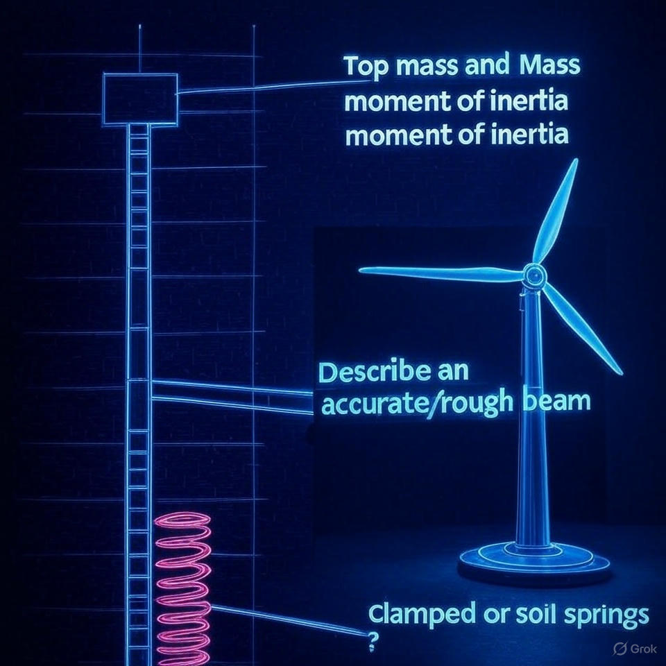

Documentation
Back to Home
Overview of Features
The repository provides a variety of engineering models, focusing on structural analysis and dynamics. One of the key features is the beam solver, which allows users to model and analyze beams under various conditions. The solver supports both accurate and rough beam descriptions, as shown in the diagram below.

The diagram illustrates a beam model with the following components:
- Top Mass and Mass Moment of Inertia: This represents the mass at the top of the beam and its rotational inertia, which are critical for dynamic analysis.
- Accurate/Rough Beam Description: Users can choose between a detailed, accurate beam model or a simplified, rough approximation depending on their needs.
- Clamped or Soil Springs: The base of the beam can be modeled as either clamped (fixed) or supported by soil springs, which simulate the ground's flexibility.
- Wind Turbine Model: The repository also includes models for wind turbines, which can be analyzed for structural integrity and dynamic response.
Explore the repository to find more models and contribute your own ideas to enhance the collection!